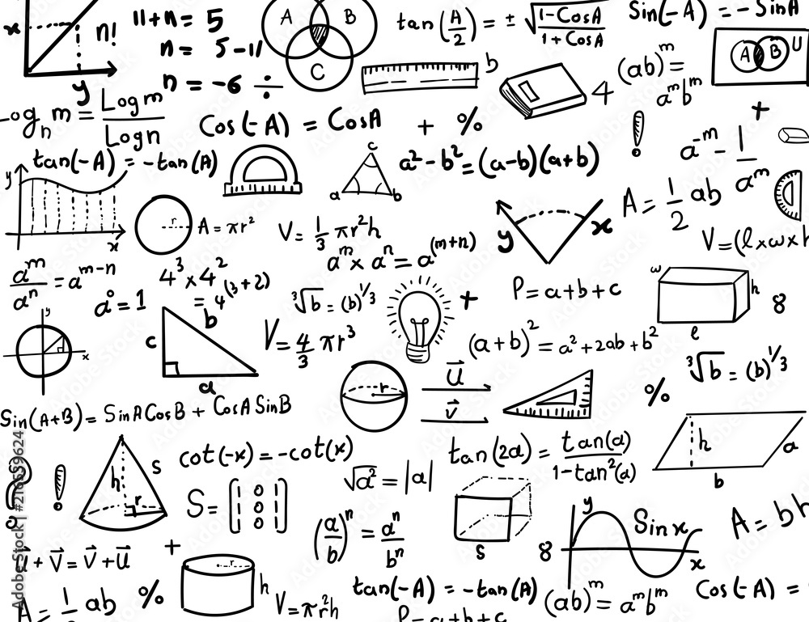

Welcome to Phox Math World!

This is a place to find math resources. Enjoy!
Below is a list of common topics in high school math. Scroll down to see the resources for each topic.

- Relations and Functions
- Calculus
- Vectors
- Trigonometry
- Combinations, Permutations, Probability
- Statistics
Relations and Functions